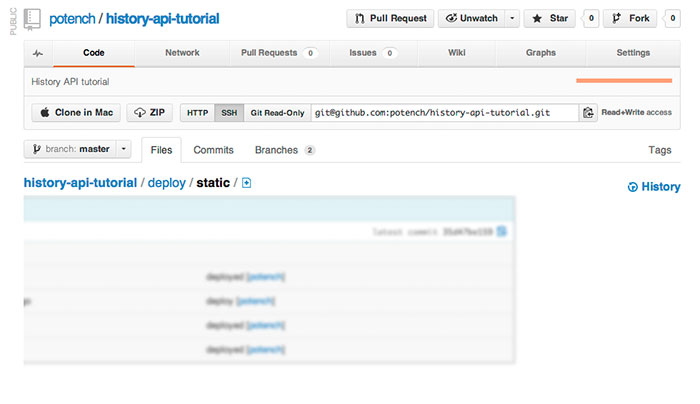

HTML5 History API Resources
Inspiration
GitHub uses jquery-pjax and the History API to traverse a code repository tree.
Clicking on folders or files transitions content from left to right when drilling down, and right to left when surfacing back up the project tree.
This elegant addition reinforces the concept of heiarchy and organization, and provides visual queues that direct our attention to priorty content.

The Tree Slider: GitHub reinforces conrtent organization and hierarchy with CSS transitions and pushState.
GitHub's Kyle Neath discusses the History API and the importance of URL design:
What's Next?
Our tutorial only scratched the surface of state management using the History API.
Next time we can dive a little deeper into some advanced topics:
1. Conditionally load partial files in Django when they are requested with AJAX
if request.is_ajax():
template = base_ajax
else:
template = base_html
This adaptive sever-side approach can strategically leverage a single template in multiple ways depending on how it's requested.
Our template extends the full page when requested traditionally, and extends a smaller "partial" page when requests using AJAX to improve load time.
2. Using Require.js and the Rosy.js framework to manage persistence, routing, transitions, and garbage collection across a complex site.
Rosy's client-side routing implementation makes it easy to implement the History API and transitions into a website.